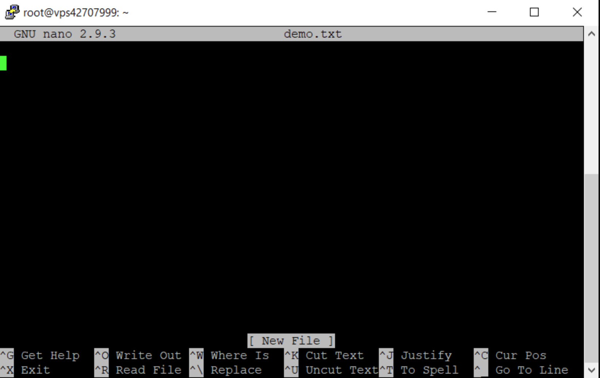

Using the Nano Text Editor
Back to Home Page
What is Nano?
Nano is a simple text editor that works directly in your command line or terminal. It's one of the easiest command-line editors to learn and use, making it perfect for beginners.
Opening Nano
To open Nano and create a new file or edit an existing one:
nano filename.py
Replace "filename.py" with the name of your file. If the file doesn't exist yet, Nano will create it when you save.
You can also open Nano without specifying a file:
nano
This opens a blank document that you can save later.
Understanding the Nano Interface

Note: If you don't see this image, don't worry! The image isn't necessary to learn Nano.
The Nano interface has three main parts:
- Title bar (top): Shows the version of Nano, the current filename, and whether the file has been modified
- Edit area (middle): This is where you type and edit your text
- Shortcut menu (bottom two lines): Shows the most common keyboard commands
In the shortcut menu, the "^" symbol means the Ctrl key. For example, "^X" means "press Ctrl and X together".
Basic Navigation
Moving around in Nano is simple:
- Use the arrow keys to move the cursor up, down, left, and right
- Use Page Up and Page Down to scroll through long files
- Use Home to go to the beginning of the current line
- Use End to go to the end of the current line
Essential Commands
Here are the most important commands you'll use in Nano:
File Operations
- Ctrl+O: Save the file (Write Out)
- After pressing Ctrl+O, you can change the filename if you want
- Press Enter to confirm
- Ctrl+X: Exit Nano
- If you've made changes, Nano will ask if you want to save them
- Press Y for yes, N for no, or Ctrl+C to cancel
- Ctrl+R: Insert the contents of another file at the cursor position
Editing
- Ctrl+K: Cut (delete) the current line into the cut buffer
- Ctrl+U: Paste the cut buffer at the cursor position
- Ctrl+6: Mark text (start selecting)
- Use arrow keys to select text after pressing Ctrl+6
- Press Ctrl+K to cut the selected text
- Ctrl+_: Go to a specific line number (type the number and press Enter)
- Ctrl+\: Search and replace
Other Useful Commands
- Ctrl+G: Show help menu
- Ctrl+C: Show cursor position (line number, column, character)
- Ctrl+W: Search for text
Example: Creating a Python File with Nano
Let's create a simple Python program using Nano:
- Open Nano to create a new Python file:
nano hello.py
- Type the following Python code:
print("Hello, world!")
name = input("What's your name? ")
print(f"Nice to meet you, {name}!")
- Save the file by pressing Ctrl+O, then press Enter to confirm
- Exit Nano by pressing Ctrl+X
- Run your Python program:
python hello.py
Tips for Using Nano
- Use the help menu: If you forget a command, press Ctrl+G to see all available commands
- Line numbers: To see line numbers while editing, use the -l option:
nano -l filename.py
- Backup files: Nano can create backup files automatically with the -B option:
nano -B filename.py
- Syntax highlighting: Some versions of Nano support syntax highlighting for programming languages
What's Next?
Now that you know how to use Nano, try:
Back to Home Page